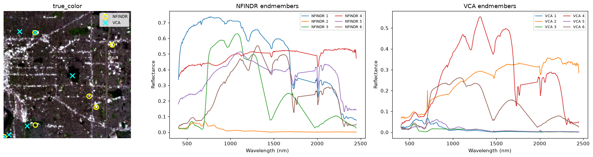
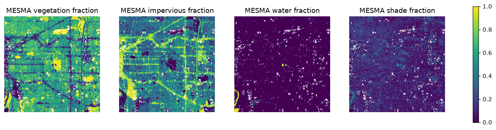
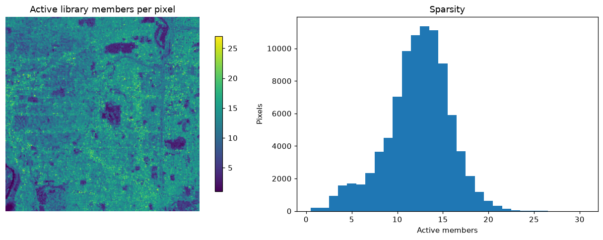

At 30 m a pixel is rarely one material: a city pixel holds roofs, trees and street; a field pixel holds leaves, soil and shadow. Spectral unmixing models each pixel as a mixture of a few pure spectra, the endmembers, and estimates their fractions. This notebook tests endmember extraction and unmixing on a synthetic scene with known answers, then unmixes Portland with endmembers found in the image, models endmember variability with MESMA, tries sparse unmixing with a large library and checks fractions against the Pavia Centre ground truth.
Overview
The linear mixing model
If materials occupy separate patches of a pixel and light interacts with only one before reaching the sensor, the pixel spectrum is a weighted sum of endmember spectra:
The two constraints (abundance non negativity, ANC, and sum to one, ASC) give four solvers: unconstrained least squares (LS), sum to one (SCLS), non negative (NNLS) and fully constrained (FCLS). Geometrically, the pixels fill a simplex whose vertices are the endmembers. Non linear mixing (multiple scattering between leaves or in sand) is ignored, which is usually acceptable at the 5 to 10 percent level.
Finding endmembers
Pixel purity index (PPI) (Boardman et al. 1995) projects the data on many random directions and counts how often each pixel lands at an extreme.
N-FINDR (Winter 1999) searches for the pixels that span the simplex of largest volume.
Vertex component analysis (VCA) (Nascimento and Bioucas-Dias 2005) repeatedly projects onto a direction orthogonal to the endmembers found so far and takes the extreme pixel.
ATGP (Ren and Chang 2003) takes the pixel with the largest residual after projecting out the targets found so far.
All assume that pure pixels exist. The number of endmembers is usually set near the intrinsic dimension (HySime, VD; notebook 09_05_03).
Variability and large libraries
One spectrum per material is a simplification: vegetation differs in species and condition, roofs in material and age, and illumination varies. MESMA (Roberts et al. 1998) tries many small models, each with one spectrum per class plus shade (a zero spectrum that absorbs brightness differences), and keeps the best fitting model per pixel. Sparse unmixing (SUnSAL, Iordache et al. 2011) uses a large library and an L1 penalty, so that each pixel picks only a few members.
Unmixing with GeoLattice
hs.ppi, hs.atgp, hs.nfindr, hs.vca and hs.extract_endmembers return the endmember spectra, their pixel positions and a SpectralLibrary. hs.unmix solves LS, SCLS, NNLS or FCLS for every pixel (NNLS and FCLS exactly for up to eight endmembers); hs.mesma, hs.sparse_unmix and hs.reconstruct cover variability, large libraries and residual analysis.
Learning objectives
Simulate a mixed scene and measure how well extraction and unmixing recover known endmembers and fractions.
Compare LS, SCLS, NNLS and FCLS and the effect of the constraints.
Extract endmembers from a real scene with N-FINDR and VCA and map their fractions.
Model endmember variability with MESMA and shade.
Unmix with a large library sparsely and count the active members.
Validate fractions against labelled pixels.
Data
Dataset
Use
Synthetic scene from hs.synthetic_library on Tanager bands
Known endmembers and fractions
Tanager urban scene (Portland), 300 by 300 pixel window
Real endmember extraction, FCLS, MESMA, sparse unmixing
Pavia Centre with ground truth
Fraction validation with class mean endmembers
Contents
Setup
A synthetic scene with known answers
Endmember extraction on the synthetic scene
Four solvers
Endmembers of a city
Fraction maps and residuals
MESMA: variability and shade
Sparse unmixing with a large library
Checking fractions against labels
Summary and exercises
Setup
Installation. This notebook needs installation option 5 (core, spatial analysis, spatial statistics, geostatistics and remote sensing): pip install "geolattice[remote-sensing]". See “Installation options” in the GeoLattice README.
Code
import warnings # warning controlwarnings.filterwarnings("ignore") # hide routine library warningsfrom pathlib import Path # file pathsimport numpy as np # arraysimport pandas as pd # tablesimport matplotlib.pyplot as plt # figuresimport geolattice # GeoLatticefrom geolattice.rsense import hyperspectral as hs # hyperspectral cubes, readers and toolsplt.rcParams.update({"figure.dpi": 110}) # figure resolutionDATA = Path("../../../../Data/08_remote_sensing/08_05_HyperSpectral") # data folder next to this notebookTANAGER = DATA /"Tanger"# Planet Tanager sample scenesOUT = Path("outputs") # results written by this notebookOUT.mkdir(exist_ok=True) # create it if neededdef tanager_file(category, product="sr"):"""Path of a Tanager product (sr or radiance) for a scene category folder."""returnnext((TANAGER / category).glob(f"*/*_ortho_{product}_hdf5.h5"))print("GeoLattice", geolattice.__version__) # library version used for this notebookimport time # timingimport scipy.io # Pavia ground truthfrom scipy import ndimage as ndi # smooth random fields
GeoLattice 0.3.49
A synthetic scene with known answers
Four endmembers (green vegetation, soil, water and clay) on Tanager’s good bands are mixed with spatially smooth random fractions; each corner holds a 4 by 4 block of one pure material, and noise with a standard deviation of 0.005 is added.
Code
probe = hs.read_tanager(tanager_file("urban"), window=(slice(0, 1), slice(0, 1))) # Tanager bandsw = hs.wavelengths(probe)probe = probe.isel(band=np.flatnonzero(probe["good"].values & (w >=400) & (w <=2450)))names = ["green_vegetation", "soil", "water", "clay_kaolinite"]E = hs.synthetic_library(np.arange(400.0, 2451.0, 1.0)).resample(probe).subset(names).spectra # (4, bands)rng = np.random.default_rng(0)H = W =100Z = np.stack([ndi.gaussian_filter(rng.normal(size=(H, W)), 4) for _ inrange(4)], -1) # smooth fieldsA = np.exp(Z / Z.std() *1.5); A /= A.sum(-1, keepdims=True) # fractions that sum to onefor k, (r, c) inenumerate([(0, 0), (0, W -4), (H -4, 0), (H -4, W -4)]): A[r:r +4, c:c +4] = np.eye(4)[k] # pure blocks in the cornerssyn = hs.as_cube(np.einsum("yxk,kb->byx", A, E) + rng.normal(0, 0.005, (E.shape[1], H, W)), hs.wavelengths(probe))print(syn.shape, "| pure pixels per material:", 16, "| mean fractions:", np.round(A.reshape(-1, 4).mean(0), 3))
(353, 100, 100) | pure pixels per material: 16 | mean fractions: [0.263 0.265 0.24 0.233]
Endmember extraction on the synthetic scene
Each extractor is asked for four endmembers. Each found spectrum is paired with the closest true endmember by spectral angle.
Code
def match(found, truth):"""Angle (deg) from each true endmember to its closest found spectrum.""" f = found / np.linalg.norm(found, axis=1, keepdims=True) t = truth / np.linalg.norm(truth, axis=1, keepdims=True)return np.degrees(np.arccos(np.clip(t @ f.T, -1, 1))).min(1)rows, found = [], {}for name in ["ppi", "atgp", "nfindr", "vca"]: t0 = time.perf_counter() res = hs.extract_endmembers(syn, 4, method=name) # spectra, positions and a library found[name] = res ang = match(res["spectra"], E) pure = np.mean([(A[r, c].max() >0.99) for r, c inzip(res["row"], res["col"])]) rows.append({"method": name, "seconds": round(time.perf_counter() - t0, 2), "pure pixels picked": pure,**{f"angle to {n.split('_')[0]} (deg)": a for n, a inzip(names, ang)}})pd.DataFrame(rows).set_index("method").round(2)
seconds
pure pixels picked
angle to green (deg)
angle to soil (deg)
angle to water (deg)
angle to clay (deg)
method
ppi
0.31
1.0
0.82
0.96
18.76
0.44
atgp
0.05
1.0
0.82
0.96
18.66
0.44
nfindr
0.26
1.0
0.79
0.96
18.76
0.47
vca
0.43
1.0
0.78
1.02
18.76
0.47
All four methods pick pure pixels, one in each corner block, and the angles to the true vegetation, soil and clay spectra are below about one degree, the effect of the added noise. Water is the exception at about 19 degrees: its reflectance (a few thousandths beyond 900 nm) is close to the noise level, so even a perfectly pure water pixel has a noisy shape. Averaging several pure pixels, or denoising first, helps dark endmembers. On this easy scene the cheap ATGP is as good as the others; real scenes without pure pixels are harder.
Four solvers
Code
rows = []for method in ["ls", "scls", "nnls", "fcls"]: ab = hs.unmix(syn, E, method=method) # fractions per endmember plus rmse F = np.stack([ab[n].values for n in ab.data_vars if n !="rmse"], -1) rows.append({"method": method, "fraction RMSE": float(np.sqrt(np.mean((F - A) **2))),"negative fractions": float((F <-1e-6).mean()), "sum to one error": float(np.abs(F.sum(-1) -1).mean()),"spectral RMSE": float(ab["rmse"].mean())})pd.DataFrame(rows).set_index("method").round(4)
fraction RMSE
negative fractions
sum to one error
spectral RMSE
method
ls
0.0216
0.0241
0.0358
0.005
scls
0.0029
0.0046
0.0000
0.005
nnls
0.0205
0.0000
0.0336
0.005
fcls
0.0029
0.0000
0.0000
0.005
All four solvers fit the spectra equally well, because the noise is the only misfit. They differ in the fractions. Unconstrained LS gives a few percent negative fractions and sums that miss one by about 0.04. NNLS removes the negative values but not the sum error, and its fractions are hardly better. The sum to one constraint is the one that matters here: SCLS and FCLS cut the fraction error by a factor of seven, and FCLS also removes the last negative values. Physically meaningful fractions need FCLS (or SCLS with a shade endmember, used in MESMA below).
Endmembers of a city
HySime suggested a signal subspace of a few tens of components for this window (notebook 09_05_03), far more than the number of materials an analyst would name. Unmixing usually uses a handful of endmembers; six are extracted here with N-FINDR and VCA.
Code
urban = hs.drop_bad_bands(hs.read_tanager(tanager_file("urban"), window=(slice(319, 619), slice(285, 585))))uwl = hs.wavelengths(urban)ems = {m: hs.extract_endmembers(urban, 6, method=m) for m in ["nfindr", "vca"]}def describe(s):"""NDVI, mean reflectance and SWIR/NIR ratio of a spectrum, for naming endmembers.""" b =lambda nm: s[np.argmin(np.abs(uwl - nm))]return {"NDVI": (b(860) - b(650)) / (b(860) + b(650)), "mean": s.mean(), "SWIR/NIR": b(1650) / b(860)}fig, axes = plt.subplots(1, 3, figsize=(17, 4.5), gridspec_kw={"width_ratios": [1, 1.3, 1.3]})hs.plot_rgb(urban, "true_color", ax=axes[0])tabs = []for ax, (m, res) inzip(axes[1:], ems.items()):for i, s inenumerate(res["spectra"]): ax.plot(uwl, s, lw=1.2, label=f"{m.upper()}{i +1}") tabs.append({"method": m, "endmember": i +1, "row": int(res["row"][i]), "col": int(res["col"][i]), **describe(s)}) axes[0].plot(res["col"], res["row"], "o"if m =="nfindr"else"x", mfc="none", ms=9, mew=2, color="yellow"if m =="nfindr"else"cyan", label=m.upper()) ax.set(title=f"{m.upper()} endmembers", xlabel="Wavelength (nm)", ylabel="Reflectance"); ax.legend(fontsize=7, ncol=2)axes[0].legend(fontsize=8)plt.tight_layout()plt.show()pd.DataFrame(tabs).round(3)

method
endmember
row
col
NDVI
mean
SWIR/NIR
0
nfindr
1
226
217
0.020
0.513
0.753
1
nfindr
2
296
0
-0.326
0.015
0.149
2
nfindr
3
268
74
0.909
0.250
0.421
3
nfindr
4
79
255
-0.003
0.484
1.217
4
nfindr
5
200
200
0.207
0.354
0.979
5
nfindr
6
50
73
0.567
0.263
1.799
6
vca
1
296
0
-0.326
0.015
0.149
7
vca
2
48
37
0.352
0.245
1.845
8
vca
3
152
161
0.624
0.009
0.345
9
vca
4
50
73
0.567
0.263
1.799
10
vca
5
291
12
0.339
0.016
0.143
11
vca
6
271
55
0.845
0.124
0.669
The extracted spectra are the extremes of the scene, each a vertex of the data cloud. The table names them: high NDVI means vegetation, very low mean reflectance water or deep shadow, and bright flat spectra roofs or concrete. Extreme does not always mean typical: some vertices are single unusual pixels (a bright roof, a building in shadow), which is why endmembers from algorithms should be inspected, and why N-FINDR and VCA can disagree on a few of them.
The maps show how extremes behave as endmembers. The dark endmember (water or deep shadow) takes a large share of nearly every pixel: it acts as shade, absorbing the brightness differences between pixels. The vegetation endmember follows parks and tree lined streets. The four bright endmembers are single unusual pixels (bright roofs and surfaces), and their fractions are near zero almost everywhere except around their own locations. The RMSE map shows the cost: errors of 0.01 to 0.02 over most of the built up area, and the worst fitting pixel has a SWIR shape that none of the six endmembers can reproduce. Six extremes are a poor description of a city’s typical materials; MESMA below uses typical spectra instead.
MESMA: variability and shade
MESMA needs a library with several spectra per class. Here each class gets three image spectra chosen by index rules: green vegetation of low, median and high brightness, impervious surfaces from bright roofs to dark pavement, and the water mean. Up to two classes plus shade are allowed per pixel.
Code
G, R, N, S1 = (hs.band_at(urban, wv).values for wv in (560, 650, 860, 1650))ndvi, ndwi = (N - R) / (N + R), (G - N) / (G + N)X = urban.valuesdef spectra_by_quantile(mask, score, qs):"""Mean 3 x 3 spectra at the pixels of mask whose score is nearest each quantile.""" out = []for q in qs: s = np.where(mask, score, np.nan) r, c = np.unravel_index(np.nanargmin(np.abs(s - np.nanquantile(s, q))), s.shape) out.append(X[:, max(r -1, 0):r +2, max(c -1, 0):c +2].reshape(X.shape[0], -1).mean(1))return np.array(out)lib_m = {"vegetation": spectra_by_quantile(ndvi >0.8, N, [0.1, 0.5, 0.9]),"impervious": spectra_by_quantile((ndvi <0.12) & (ndwi <0), S1, [0.05, 0.5, 0.97]),"water": X[:, ndwi >0.3].mean(1, keepdims=True).T}t0 = time.perf_counter()ms = hs.mesma(urban, lib_m, max_classes=2, shade=True, max_rmse=0.03)print(f"{len(ms.attrs['models'])} models tried in {time.perf_counter() - t0:.0f} s | "f"pixels with a model: {float((ms['model'] >=0).mean()):.1%} | mean RMSE {float(ms['rmse'].mean()):.4f}")used = pd.Series(ms["model"].values.ravel()).value_counts(normalize=True).head(6)used.index = [ms.attrs["models"][i] if i >=0else"none"for i in used.index]used.round(3).to_frame("share of pixels")
22 models tried in 5 s | pixels with a model: 96.7% | mean RMSE 0.0075
share of pixels
vegetation_1 + impervious_0
0.643
vegetation_1 + impervious_1
0.122
vegetation_2 + impervious_0
0.049
vegetation_2 + impervious_1
0.045
none
0.033
vegetation_2
0.024
Code
fig, axes = plt.subplots(1, 4, figsize=(17, 4.5))for ax, n inzip(axes, ["vegetation", "impervious", "water", "shade"]): im = ax.imshow(ms[n], cmap="viridis", vmin=0, vmax=1); ax.set_title(f"MESMA {n} fraction"); ax.axis("off")plt.colorbar(im, ax=axes, shrink=0.8)plt.show()veg_f, imp_f = ab[em_lib.names[int(np.argmax([describe(s)["NDVI"] for s in em_lib.spectra]))]].values, ms["vegetation"].valuesok = np.isfinite(veg_f) & np.isfinite(imp_f)print(f"correlation of the MESMA vegetation fraction with the most vegetated N-FINDR fraction: {np.corrcoef(veg_f[ok], imp_f[ok])[0, 1]:.2f}")

correlation of the MESMA vegetation fraction with the most vegetated N-FINDR fraction: 0.90
The model table shows which combinations the pixels chose: most of the window is explained by a vegetation plus impervious mixture, as expected in a city, and the shade fraction absorbs brightness differences between sunlit and shaded parts of a pixel. The class fractions are shade normalised, so they say how much of the non shaded part of a pixel is vegetation. The vegetation map agrees well with the N-FINDR vegetation fraction, but MESMA’s fractions are easier to interpret because each class has a name and several spectra.
Sparse unmixing with a large library
ATGP extracts 30 candidate spectra from the window, more than any analyst would use. Sparse unmixing lets each pixel choose a few of them.
Code
big = hs.atgp(urban, 30)["library"] # 30 candidate endmemberst0 = time.perf_counter()sp = hs.sparse_unmix(urban, big, lam=1e-3, max_iter=600)print(f"sparse unmixing in {time.perf_counter() - t0:.0f} s | mean RMSE {float(sp['rmse'].mean()):.4f} "f"(FCLS with 6 endmembers: {float(ab['rmse'].mean()):.4f})")fig, axes = plt.subplots(1, 2, figsize=(12, 4.5))im = axes[0].imshow(sp["n_active"], cmap="viridis"); axes[0].set_title("Active library members per pixel"); axes[0].axis("off")plt.colorbar(im, ax=axes[0], shrink=0.8)axes[1].hist(sp["n_active"].values.ravel(), bins=np.arange(0.5, 31.5, 1))axes[1].set(xlabel="Active members", ylabel="Pixels", title="Sparsity")plt.tight_layout()plt.show()
sparse unmixing in 16 s | mean RMSE 0.0023 (FCLS with 6 endmembers: 0.0116)

With 30 candidates the fit is five times better than with six FCLS endmembers, but at this penalty the solution is not very sparse: most pixels use 10 to 15 of the 30 members, and only parks and water use a few. The penalty lam sets the trade off: larger values give sparser, less accurate fits, and a value suited to the scale of the reflectance has to be chosen (see the exercises). Note that sparse unmixing here does not enforce the sum to one constraint.
Checking fractions against labels
The Pavia Centre ground truth labels pure looking pixels of nine classes. Using the mean spectrum of each class as an endmember, FCLS should give each labelled pixel a high fraction of its own class.
Code
arr = np.load(DATA /"Pavia/pavia.npy")pavia = hs.as_cube(arr.transpose(2, 0, 1).astype("float32") /10000, np.linspace(430, 860, arr.shape[2]))gt = scipy.io.loadmat(DATA /"Pavia/Pavia_gt.mat")["pavia_gt"]NAMES = ["water", "trees", "meadows", "self-blocking bricks", "bare soil", "asphalt", "bitumen", "tiles", "shadows"]P = pavia.values.reshape(pavia.sizes["band"], -1)class_lib = hs.library.from_dict({n: P[:, gt.ravel() == k +1].mean(1) for k, n inenumerate(NAMES)}, hs.wavelengths(pavia))t0 = time.perf_counter()pab = hs.unmix(pavia, class_lib, method="fcls") # nine endmembers: FISTA solverprint(f"unmixed {pavia.sizes['y'] * pavia.sizes['x']:,} pixels in {time.perf_counter() - t0:.0f} s")own = pd.DataFrame({n: [np.median(pab[n].values[gt == k +1]), np.mean(pab[n].values[gt == k +1] >0.5)]for k, n inenumerate(NAMES)}, index=["median own fraction", "share with own fraction > 0.5"]).Tothers = {n: pd.Series({m: float(np.mean(pab[m].values[gt == k +1])) for m in NAMES if m != n}) for k, n inenumerate(NAMES)}own["main competitor"] = [others[n].idxmax() for n in NAMES] # class taking most of the restown["its mean fraction"] = [others[n].max() for n in NAMES]own.round(3)
Water, shadows, meadows and self-blocking bricks receive a median of 0.88 to 0.96 of their own endmember in their labelled pixels. Bare soil and trees do worst (medians of about 0.36 and 0.57): the “main competitor” column shows that meadows take about 0.38 of the tree pixels and self-blocking bricks about 0.35 of the bare soil pixels, and tiles lose about 0.24 to bare soil. With one mean spectrum per class and only VNIR bands, spectrally similar classes share their pixels, the same reason they are the hardest to classify. The fraction maps give the gradual transitions (tree crowns over streets, mixed roofs) that hard classification hides.
Summary and exercises
Key points
The linear mixing model with non negativity and sum to one constraints (FCLS) gives physically meaningful fractions; LS, SCLS and NNLS fit as well but violate one constraint or both.
Extractors recover endmembers when pure pixels exist (dark ones stay noisy); on real scenes they return the extremes of the data, which may be rare pixels rather than typical materials.
Residual (RMSE) maps show where the endmember set is incomplete.
MESMA with shade handles variability within classes and brightness differences; sparse unmixing fits better with a large library, but its sparsity depends on the penalty.
Class mean endmembers validated on labelled pixels show which materials a sensor can separate.